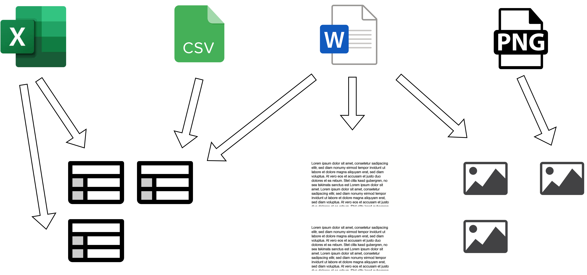
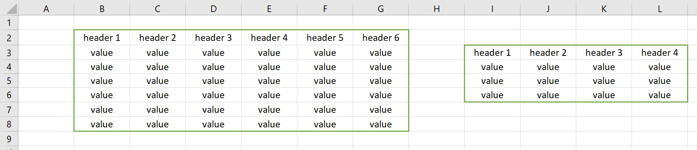
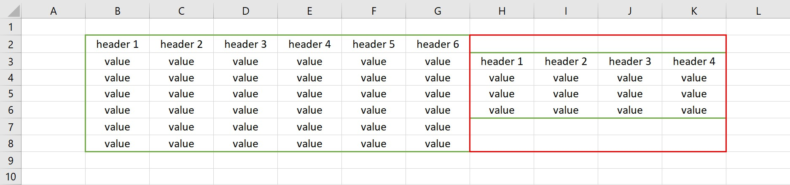
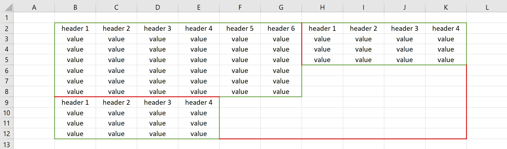
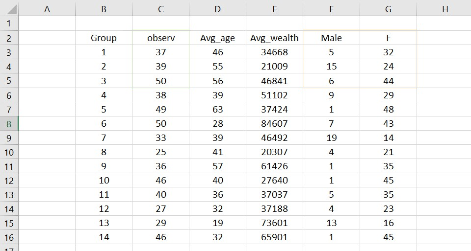
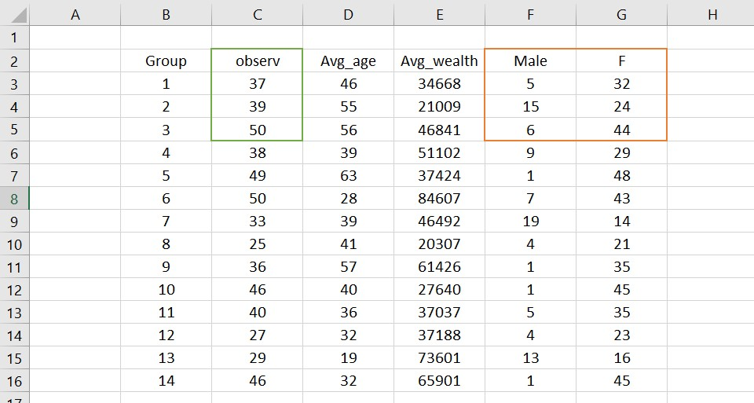
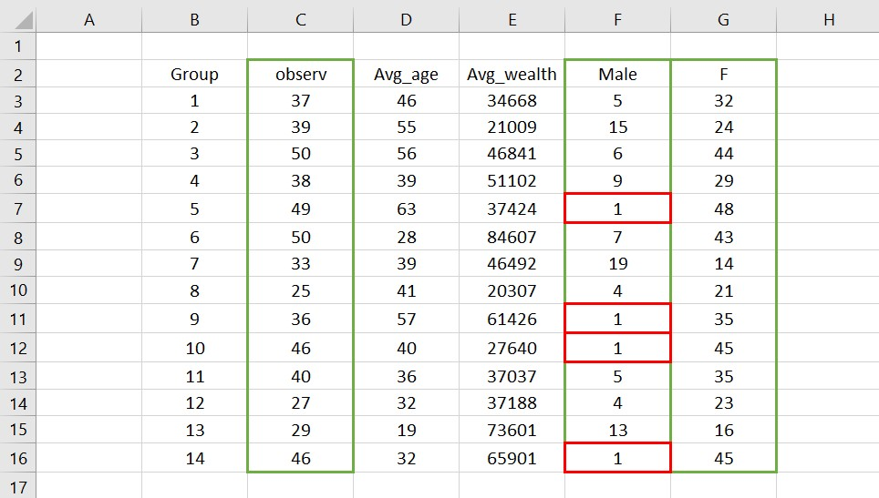
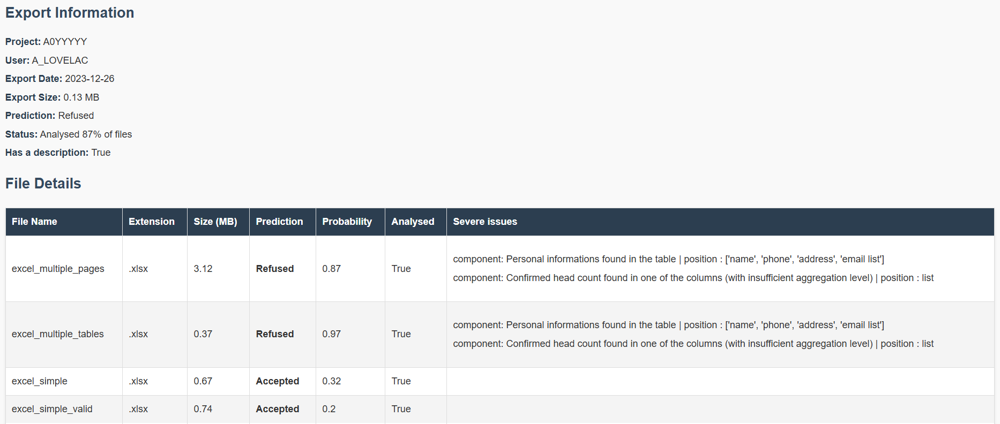

Improving semi-automated export check with a content based approach
Yacine El Bouhairi - Titouan Rigaud
Eric Debonnel - Florian Sallaberry - Pengfei Liu - Cédric Hansen
A bit of context : Trusted Research Environments
TRE with manual output checks

Checking files is :
- Long for output checkers
- Somewhat boring
- Long for users
- An absolute necessity to guarantee statistical secrecy
The goal is to automate some checks
Theoretical semi-automated system

The challenges
- Correctly opening files and extract information from them ❓
- Generate numerical variables from files❓
- Train models ✅
- Assess performance ❓
- Assemble everyting together in a single system ✅
Representing the files and opening them
How do you represent a file ?

The content
A file is a list of components, these components being tables, images or texts, then, we can analyse these "neutral components"
Creating the components
✅ The simple case for excel ✅
⚠️ The complex case ⚠️
❌ The near impossible case ❌
⚠️ Let's assume components are correctly generated
For the remainder of this presentation, we will assume the impossible case did not show up, but it can technically happen
Generating the features
Probably the most important part
How do we analyse this table ?
Is it safe and why ?
The questions a human controller can ask itself :
- Does the table contain columns of positive integers ?
- In these columns, do some look like counts of objects/persons ?
- Does these count columns contain values that are under a minimum threshold given by the producer ?
- Does the table contain non aggregated information (data row by row on persons) ?
Using a mix of LLM and code, it is possible to answer some of these questions
- Finding positive integers -> 🐍 Code
- Where are the counts of objects/persons -> 🤖 AI
- Do counts respect threshold -> 🐍 Code
- Non aggregated information -> 🤖 AI and 🐍 Code
Simplified example of prompt
Here is a short extract of the table you need to analyse.
[...]
Can you determine which of the columns contain count of individuals ?
Based on the extract, here are the counts
Controlling thresholds using Python is now easier
Exemple of variables generated from files
- Extension of the file
- Is the text readable ?
- Does the table contain counts of values that are not aggregated enough ?
- Does the table contain individual data ?
- Can any id be found in the table ?
- ...
Training models
Some classic machine learning issues
Model drift
A model is at its peak performance when it is just been trained, then the data it was trained on slowly becomes less and less relevant
What variables do we use ?
- The ones that are stable across time
- The ones that are founded on content more than metadata
- The ones that have a high correlation with Label
Assessing performance
Because a false negative is much more problematic than a false positive, we rely on metrics that allow to put more weight on recall than precision
We mainly use F3 score and confusion matrix to evaluate the model
On the test dataset
| Accepted | Refused | |
|---|---|---|
| Predicted accepted | 777 | 9 |
| Predicted refused | 107 | 157 |
F3_Score : 0,87
Limits to this approach
Ai is not perfect
There is a balance to be found between very large models and small ones.
Big models, with more than 15B parameters perform very well, but cost a lot.
Small models are less precise, but can infer faster, and with a smaller computing power
Current recommandations towards AI
- Pick a model with at least 10B parameters
- Ask it to perform small tasks, and help it with code around it
- Format correctly the data to make the tasks simpler
- Provide small amounts of data (maximum 15 columns and 4-5 rows)
Current recommandations for the whole system
- Use determinist rules to tackle with simple cases to limit risk
- Labelling the training data as precisely as possible
- Impose some basic rules on exports, while keeping at as open as possible for users
Future work
What can we do to improve this further?
Continous training
- Detecting data shifting
- New features using Large Language Models (ChatGPT like infrastructures self-hosted)
Other ideas
- Using more data to train, to vary the examples and make the model more robust
- Improve the openers to solve issues related to components generation
One last thing
Building your model on content based features allows to create useful reports :
Merci !
Contact : titouan.rigaud@casd.eu